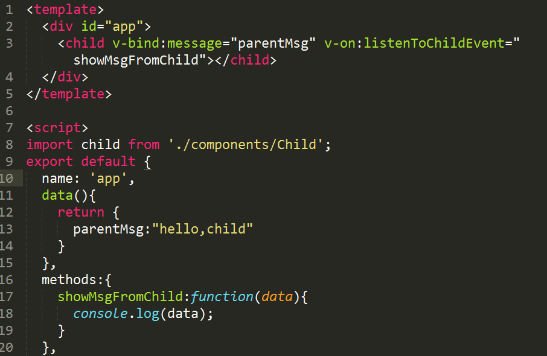

vue自定义组件双向绑定的实现
1.父子通信
子组件

父组件

<input v-model="searchText">
<el-select v-model="value4" clearable placeholder="请选择">
<el-option
v-for="item in options"
:key="item.value"
:label="item.label"
:value="item.value">
</el-option>
</el-select>
- 然后当在父级组件监听这个事件的时候，我们可以通过 $event 访问到被抛出的这个值